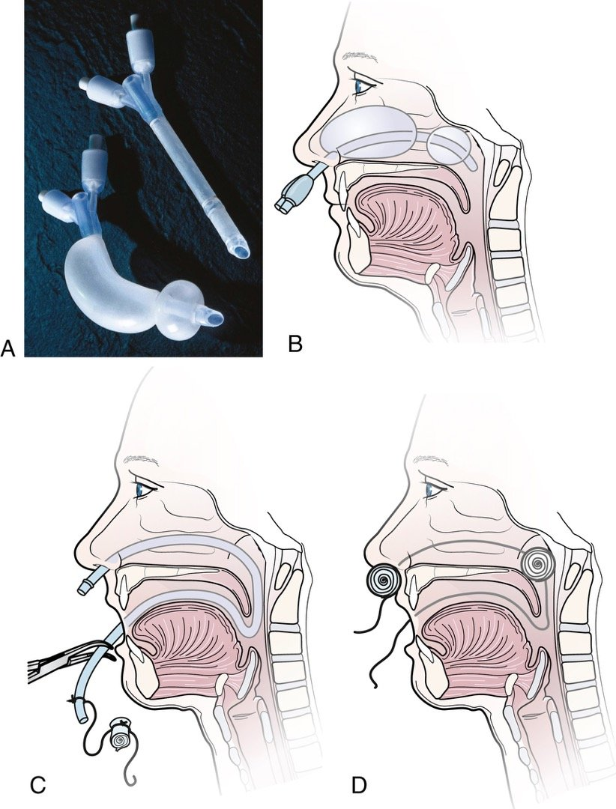
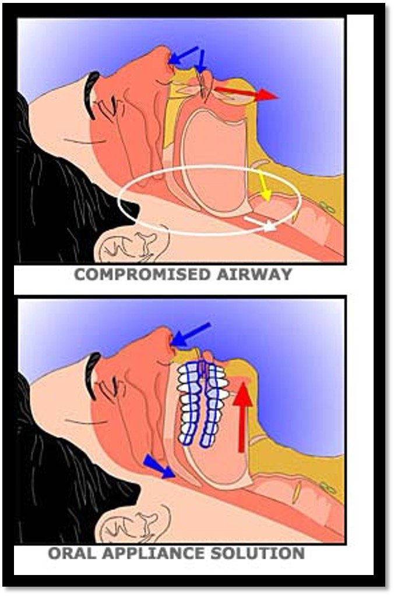

Week 1 · Topic 2
Upper Respiratory Problems
Epistaxis (Nosebleed)
Epistaxis is just the clinical name for a nosebleed.
Common Causes
- Dry air (irritated nasal mucosa) — including going somewhere with drier air, like the mountains.
- Trauma, infection, or a foreign body (think pediatric patients).
- Tumors.
- Hypertension.
- A blood disorder / blood dyscrasia — e.g. a patient on anticoagulants with thin blood, or someone who's had chemotherapy.
If a patient has a spontaneous nosebleed, ask whether they're on anticoagulants — it likely explains the cause, and affects how quickly you can get it to stop.
| Anticoagulant | Antidote |
|---|---|
| IV Heparin | Protamine sulfate. |
| Warfarin | Vitamin K. |
Anterior Nosebleed
- The one you'd typically think of — up in the front part of the nose.
- Position the patient upright, leaning forward (not backward — blood going down the back of the throat could cause aspiration).
- Lateral pressure on the nose, with ice, to vasoconstrict.
- Discourage nose blowing — especially important if the patient has increased ICP, since blowing increases pressure in the nose.
- Pinch just below the bony prominence, on the soft tissue — pinching the bone itself won't do any good.
Posterior Nosebleed
- A bigger deal — usually requires hospitalization.
- Hard to stop: you can't pinch bleeding happening at the back of the bone.
- May need a balloon catheter or posterior packing (a tamponade — pressure applied to obstruct the capillaries and stop the bleed).
- With packing in place, keep an eye on respiratory status (it can impede breathing) — humidification, oxygenation, bed rest, pain control, oral care, and patient teaching (e.g. saline spray).
- Avoid aspirin and NSAIDs (they thin the blood) and avoid strenuous activity.

Obstructive Sleep Apnea (OSA)

- Apnea = a cessation of breathing. Hypopnea = breathing slows considerably (both are respiratory-effort-related).
- Caused by repetitive collapsing of the upper airway during sleep — the mandible drops back and blocks the airway, and the patient isn't aware it's happening.
| Risk Factor | Note |
|---|---|
| Obesity | A lot of adipose tissue and a large neck circumference literally impedes the airway by pressing on it. |
| Nasal/Pharyngeal Structural Abnormalities | — |
| Increased Age | — |
| Male Sex | — |
| Smoking | ★ Also a risk factor, but a less well-established one than the four above. |
Signs and symptoms: patients are often unaware they have it — they're just sleepy, and it's usually their significant other who reports the snoring/noises. Also: morning headaches (from lack of quality sleep), a large neck/waist circumference, motor vehicle crashes (daytime sleepiness while driving), and neuropsychiatric dysfunction (losing good-quality REM sleep affects emotional status). OSA can also drive increased blood pressure, heart failure, and metabolic syndrome — repeatedly holding their breath backs up fluid inside the lungs.
Polysomnography (a sleep study, done at a sleep center) is the gold standard for diagnosing OSA.
CPAP
- Continuous Positive Airway Pressure — the mainstay treatment for OSA, and what's used most often.
- Simple, works well, and cheap.
- One constant pressure the whole time; no supplemental oxygen involved (though it may be added at home).
- Pushes positive pressure into the airway to help it stay open on both inhalation and exhalation.
BiPAP
- A little fancier and more expensive than CPAP; non-invasive (as opposed to the BiPAP used in the ICU).
- Two pressures: one during inhalation, a lower one during exhalation — easier for the patient to push air out.
- Works well for a patient who has trouble exhaling air, e.g. COPD.
- Also used for neuromuscular disease and chest wall deformities.
- One of the last steps before intubation — trying to prevent having to intubate and send the patient to the ICU.
An estimated 20–40% of patients with a CPAP/BiPAP order don't actually use it, because it's uncomfortable — ask about this and look for patient education opportunities. Other treatments: weight reduction, exercise, avoiding alcohol and smoking, sleeping on the side instead of the back (the mandible drops back when supine), good sleep hygiene, and oral appliances for mild-to-moderate cases (worn during sleep to keep the mandible pulled up and off the back of the throat). In serious cases, surgery (tissue removal/repositioning of the jaw) or even a tracheostomy may be necessary.
Tracheostomy Care (Revisit)
A quick revisit, since trachs come up in med-surg — this is fair game for clinical and for exams.
- Phalange — the plate on the outside.
- Outer cannula — goes into the stoma; the inner cannula goes inside the outer cannula.
- Obturator — used to reinsert a trach that's been accidentally coughed out. It has a point that helps ease entry into the stoma.
Shiley (plastic, white)
- Has a cuff (can be inflated or not).
- What a patient gets initially, fresh post-op — even if the trach will end up being long-term.
- Disposable inner cannula — thrown away and replaced at trach care, not scrubbed.
Jackson (metal)
- No cuff.
- Switched to once the patient has had the trach long enough to be long-term.
- Inner cannula is cleaned with a scrub brush, not thrown away.
Either type still needs its obturator taped to the bedside at all times.
| If the Trach Comes Out | Why |
|---|---|
| Extend the patient's neck | Straightens the neck out to open the tissue. |
| Insert the obturator into the outer cannula, then insert into the stoma | The obturator's point facilitates entry into the stoma. |
| Remove the obturator | Leaving it in would obstruct the airway. |
| Reinsert the inner cannula | Completes the trach. |
| Check breath sounds and secure the trach | Confirms placement and keeps it from coming back out. |
Acute Pharyngitis
"-itis" always means inflammation — pharyngitis is inflammation of the pharynx and tonsils.
| Type | Key Features |
|---|---|
| Viral | The most common type by far. |
| Bacterial (Streptococcal) | Only about 1 in 10 adults with a sore throat actually have bacterial pharyngitis. Sudden-onset sore throat, tonsillar hypertrophy (swollen, red, erythematous, tender tonsils), lymphadenopathy, and fever. |
| Fungal | Seen in patients on antibiotics — commonly called thrush, caused by candida albicans. |
Viral and bacterial pharyngitis are difficult to tell apart by symptoms alone — a rapid strep test determines which one it is.
| Type | Treatment |
|---|---|
| Bacterial | Antibiotics. |
| Fungal (Thrush) | Nystatin — a swish-and-spit or swish-and-swallow solution. |
| Viral | Symptomatic care only: soothing treatments, analgesics, anti-pyretics. |
Self-Test Flashcards
Click a card to flip it and check your answer.
Practice Questions
All 20 Must Know + Extra Practice questions for this section, pulled from the same bank as Build Your Own Exam. Answer each, then submit to see your score and rationales.